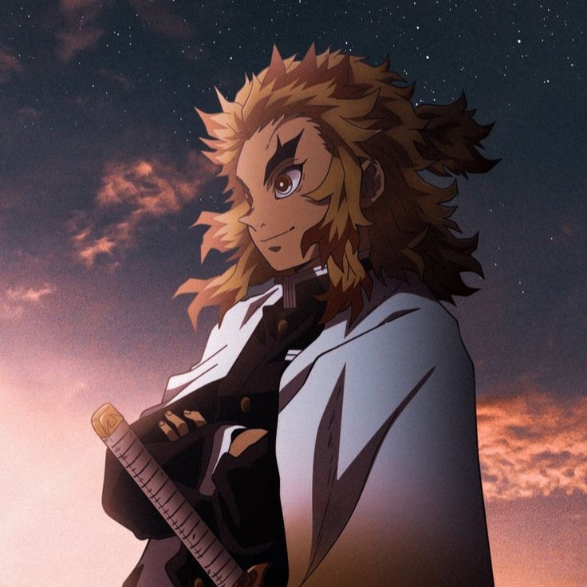
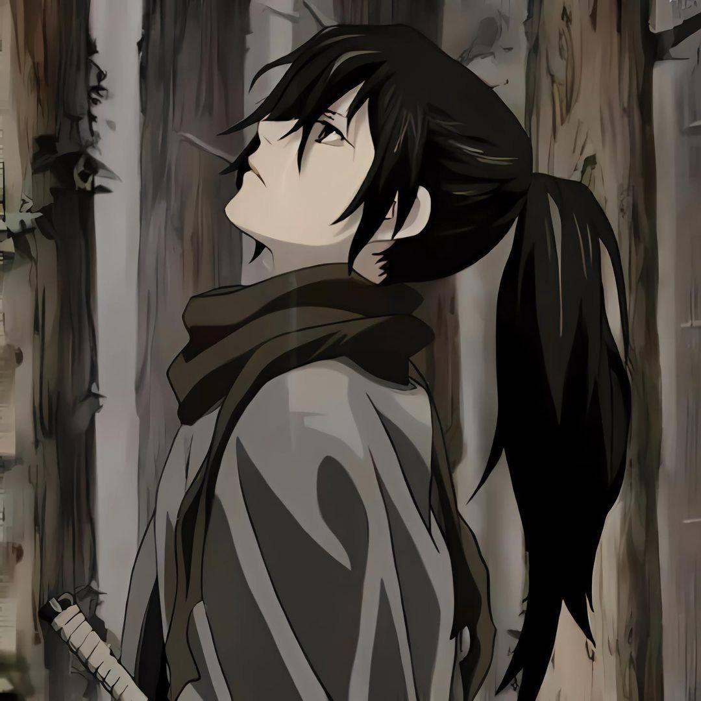
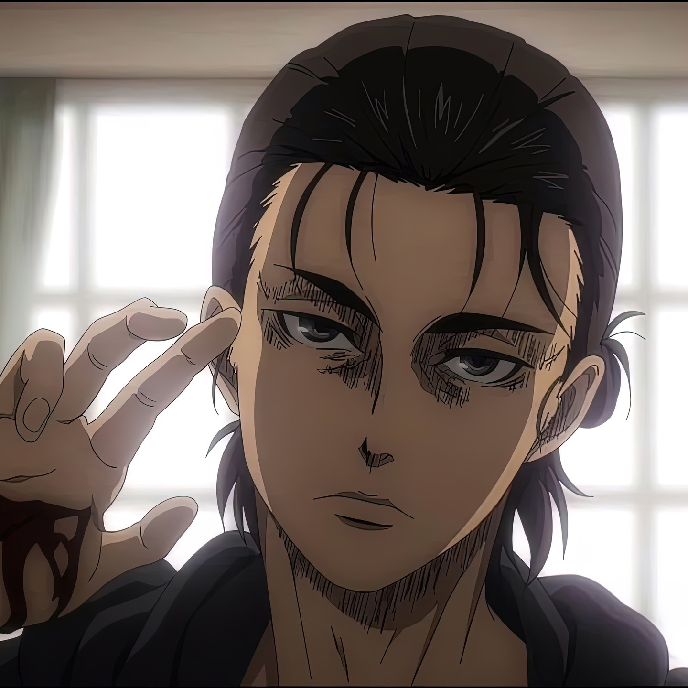
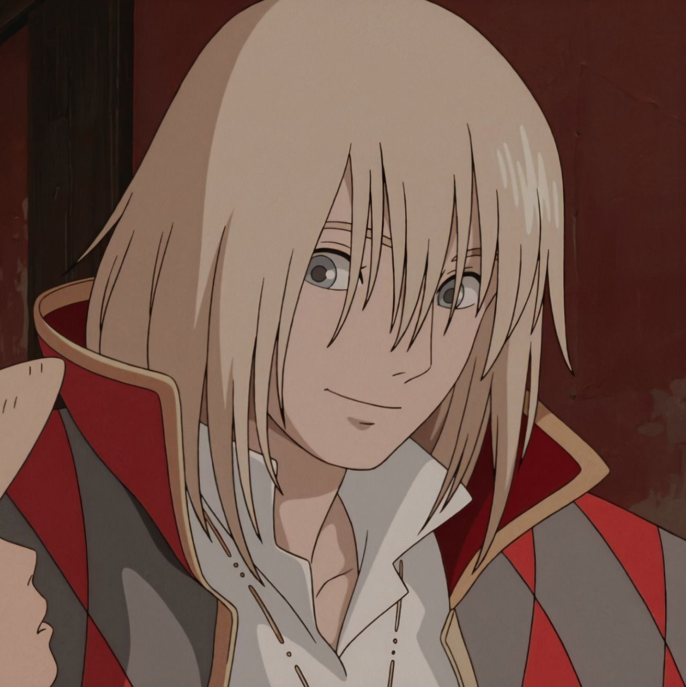
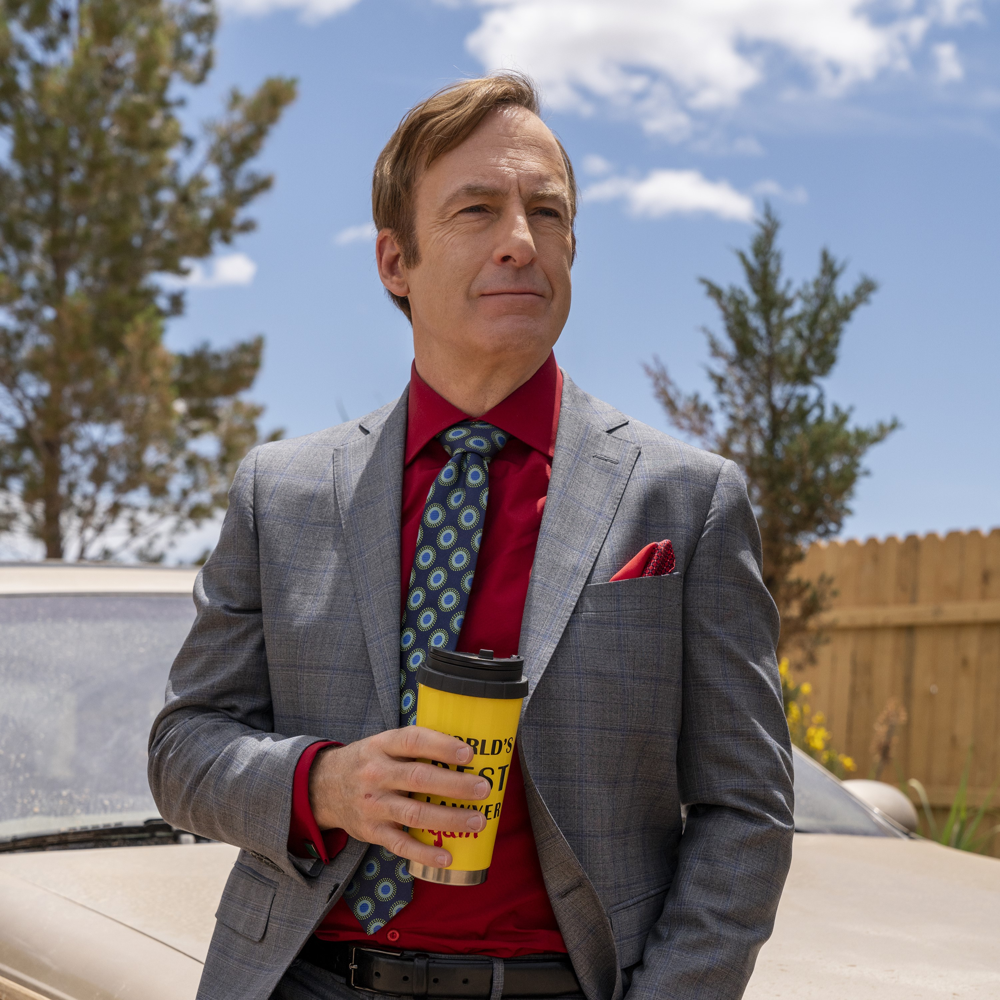

Это было самое начало пути. На этом этапе важно было проникнуться
основами и настроиться на учёбу. И, возможно, подумать, как новые
знания могут повлиять на ваше будущее.
Ещё до начала ЯП я была знакомы с вёрсткой, но на первом же спринте я
узнала много нового, и стала понемногу понимать, как надо правильно
верстать сайты.
1 спринт: Я — чистый лист
розовые очки
На первых этапах мы работали со страхами и сомнениями, которые часто
испытывают новички. Один из них — страх перед чистым листом. Это,
конечно же, намного сложнее, чем боязнь куска бумаги. Часто за этим
ощущением скрываются более глубокие вопросы: с чего начать? а вдруг
будет слишком сложно? что, если я не справлюсь?
В начале первого спринта я понимала, что многое уже знаю, но так же, я
узнала множество нюансов, о которых раньше не задумывалась, это
позволило мне понять, что мне есть куда расти.
1 спринт: А если не получится?
что-то прекрасное

Первый проект — позади! Но это всё ещё самое начало пути. Радость
могла быстро померкнуть и смениться ожиданием провала. Или вы,
наоборот, могли вдохновиться успехами и поверить в себя.
После прохождения первого спринта во мне появилась уверенность,
которой раньше не было. Я поняла, что это моё, и что я хочу идти
дальше.
2 спринт: Погоня за идеалом
вдох выдох

На этом этапе вы уже достаточно разбирались в основах вёрстки, чтобы
понять, как много ещё впереди. Вы могли попытаться погнаться за
идеалом и понять, что он недостижим. А, может, вы вовсе и не
подвержены перфекционизму и вместо того, чтобы сделать идеально,
старались просто сделать.
С новыми силами я приступила к работе, глаза боялись, а руки сделали.
После всего, что я узнала, у меня не было дороги назад, был только
длинный путь вперёд.
2 спринт: О тех, кто рядом
соло
Всё это время вы были не одиноки (хотя, возможно, иногда и
чувствовали, что одни против целого мира). Вас окружали одногруппники,
команда сопровождения и просто близкие люди, которым можно
пожаловаться, если очередной макет просто так не поддавался. Осваивать
что-то новое легче, когда рядом есть единомышленники, не правда ли?
Меня всегда поддерживали дорогие мне люди, наверное, отчасти именно
они давали мне сил идти дальше.
3 спринт: Обходные стратегии
дорога выборов

На этом курсе вы постоянно решали разные задачи. В какой-то момент вам
могло показаться, что решения просто иссякли. Значит, пришло время
посмотреть на задачу под другим углом.
Наверное из всех спринтов этот дался тяжелее всего. Но теперь, смотря
назад, я понимаю, что и как надо делать.
3 спринт: Когда опускаются руки
blood&borne

Во время учёбы часто возникает чувство, когда не знаешь, за что
хвататься. Вроде и проектную пора сдавать, и задачи хочется порешать,
и в теории получше разобраться, и жизнь не забыть пожить. В такие
моменты очень нужна концентрация. Вспомните, откуда вы её черпали.
Концентрация, это очень важно для выполнения задачи, сохранить её мне
помогали прогулки и игры с друзьями.
«Сейчас я здесь»
намасте

Сейчас вы уже очень много знаете о вёрстке. Но это только начало.
Во-первых, впереди ещё много материала про «красотищу». Во-вторых, с
окончанием курса учёба не заканчивается. Вёрстка — это целый мир. И
этот мир постоянно меняется. Познать его полностью не получится, но
это тот случай, когда важен сам процесс познания. Ведь часто путь — и
есть результат.
Я чувствую уверенность в себе, в завтрашнем дне, в выбранном деле.